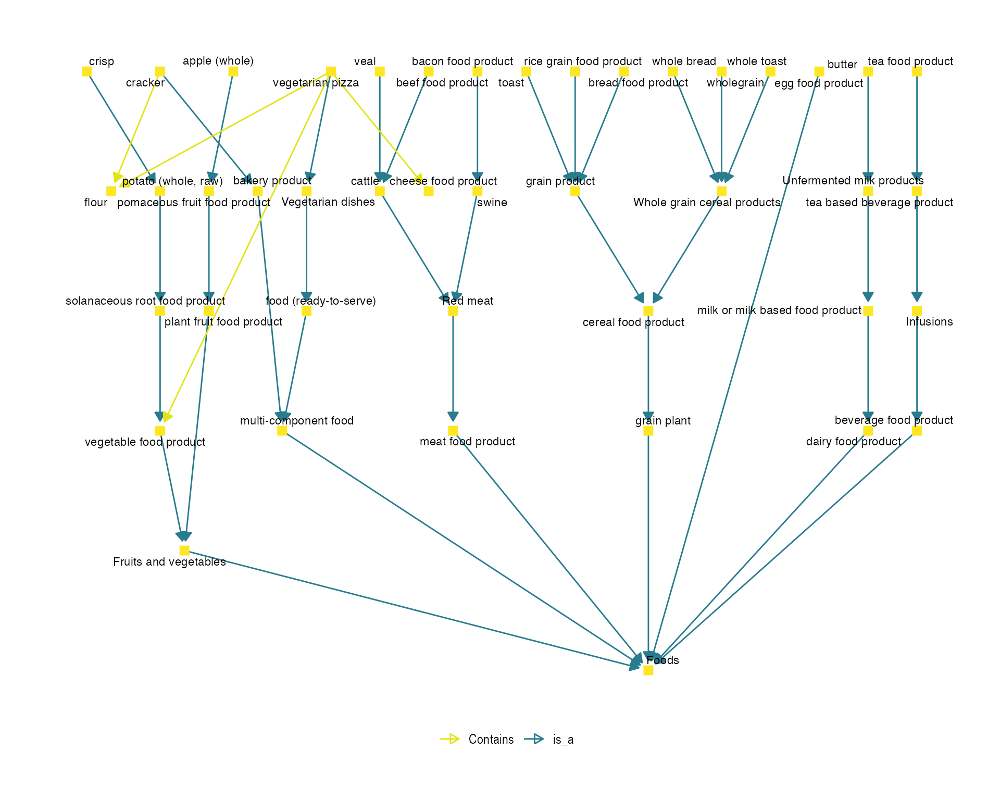

vignettes/Dietary_data_annotation.Rmd
Dietary_data_annotation.RmdCompiled date: 2021-07-20
Last edited: 2021-14-05
License: GPL-3
Run the following code to install the Bioconductor version of the package.
if (!requireNamespace("BiocManager", quietly = TRUE))
install.packages("BiocManager")
BiocManager::install("fobitools")We will also need some additional CRAN packages that will be very useful in this vignette.
In nutritional studies, dietary data are usually collected by using different questionnaires such as FFQs (food frequency questionnaires) or 24h-DRs (24 hours dietary recall). Commonly, the text collected in these questionnaires require a manual preprocessing step before being analyzed.
This is an example of how an FFQ could look like in a common nutritional study.
load("data/sample_ffq.rda")
sample_ffq %>%
dplyr::slice(1L:10L) %>%
kbl(row.names = FALSE, booktabs = TRUE) %>%
kable_styling(latex_options = c("striped"))| ID | Name |
|---|---|
| ID_001 | Beef: roast, steak, mince, stew casserole, curry or bolognese |
| ID_002 | Beefburgers |
| ID_003 | Pork: roast, chops, stew, slice or curry |
| ID_004 | Lamb: roast, chops, stew or curry |
| ID_005 | Chicken, turkey or other poultry: including fried, casseroles or curry |
| ID_006 | Bacon |
| ID_007 | Ham |
| ID_008 | Corned beef, Spam, luncheon meats |
| ID_009 | Sausages |
| ID_0010 | Savoury pies, e.g. meat pie, pork pie, pasties, steak & kidney pie, sausage rolls, scotch egg |
The fobitools::annotate_foods() function allows the automatic annotation of free nutritional text using the FOBI ontology (Castellano-Escuder et al. 2020). This function provides users with a table of food IDs, food names, FOBI IDs and FOBI names of the FOBI terms that match the input text. The input should be structured as a two column data frame, indicating the food IDs (first column) and food names (second column). Note that food names can be provided both as words and complex strings.
This function includes a text mining algorithm composed of 5 sequential layers. In this process, singulars and plurals are analyzed, irrelevant words are removed, each string of the text input is tokenized and each word is analyzed independently, and the semantic similarity between input text and FOBI items is computed. Finally, this function also shows the percentage of the annotated input text.
annotated_text <- fobitools::annotate_foods(sample_ffq)
#> 89.57% annotated
#> 2.898 sec elapsed
annotated_text$annotated %>%
dplyr::slice(1L:10L) %>%
kbl(row.names = FALSE, booktabs = TRUE) %>%
kable_styling(latex_options = c("striped"))| FOOD_ID | FOOD_NAME | FOBI_ID | FOBI_NAME |
|---|---|---|---|
| ID_001 | Beef: roast, steak, mince, stew casserole, curry or bolognese | FOODON:00001041 | beef food product |
| ID_001 | Beef: roast, steak, mince, stew casserole, curry or bolognese | FOODON:00003140 | stew |
| ID_0010 | Savoury pies, e.g. meat pie, pork pie, pasties, steak & kidney pie, sausage rolls, scotch egg | FOODON:00001274 | egg food product |
| ID_0010 | Savoury pies, e.g. meat pie, pork pie, pasties, steak & kidney pie, sausage rolls, scotch egg | FOODON:00001006 | meat food product |
| ID_0010 | Savoury pies, e.g. meat pie, pork pie, pasties, steak & kidney pie, sausage rolls, scotch egg | FOODON:00003270 | pork ribs |
| ID_0010 | Savoury pies, e.g. meat pie, pork pie, pasties, steak & kidney pie, sausage rolls, scotch egg | FOODON:03315904 | sausage (formed) |
| ID_00100 | Oranges, satsumas, mandarins, tangerines, clementines | FOODON:03309832 | orange (whole, raw) |
| ID_00101 | Grapefruit | FOODON:03301702 | grapefruit (whole, raw) |
| ID_00102 | Bananas | FOODON:03311513 | banana (whole, ripe) |
| ID_00103 | Grapes | FOODON:03301123 | grape (whole, raw) |
Additionally, the similarity argument indicates the semantic similarity cutoff used at the last layer of the text mining pipeline. It is a numeric value between 1 (exact match) and 0 (very poor match). Users can modify this value to obtain more or less accurated annotations. Authors do not recommend values below 0.85 (default).
annotated_text_95 <- fobitools::annotate_foods(sample_ffq, similarity = 0.95)
#> 86.5% annotated
#> 2.89 sec elapsed
annotated_text_95$annotated %>%
dplyr::slice(1L:10L) %>%
kbl(row.names = FALSE, booktabs = TRUE) %>%
kable_styling(latex_options = c("striped"))| FOOD_ID | FOOD_NAME | FOBI_ID | FOBI_NAME |
|---|---|---|---|
| ID_001 | Beef: roast, steak, mince, stew casserole, curry or bolognese | FOODON:00001041 | beef food product |
| ID_001 | Beef: roast, steak, mince, stew casserole, curry or bolognese | FOODON:00003140 | stew |
| ID_0010 | Savoury pies, e.g. meat pie, pork pie, pasties, steak & kidney pie, sausage rolls, scotch egg | FOODON:00001274 | egg food product |
| ID_0010 | Savoury pies, e.g. meat pie, pork pie, pasties, steak & kidney pie, sausage rolls, scotch egg | FOODON:00001006 | meat food product |
| ID_0010 | Savoury pies, e.g. meat pie, pork pie, pasties, steak & kidney pie, sausage rolls, scotch egg | FOODON:00003270 | pork ribs |
| ID_0010 | Savoury pies, e.g. meat pie, pork pie, pasties, steak & kidney pie, sausage rolls, scotch egg | FOODON:03315904 | sausage (formed) |
| ID_00100 | Oranges, satsumas, mandarins, tangerines, clementines | FOODON:03309832 | orange (whole, raw) |
| ID_00101 | Grapefruit | FOODON:03301702 | grapefruit (whole, raw) |
| ID_00102 | Bananas | FOODON:03311513 | banana (whole, ripe) |
| ID_00103 | Grapes | FOODON:03301123 | grape (whole, raw) |
See that by increasing the similarity value from 0.85 (default value) to 0.95 (a more accurate annotation), the percentage of annotated terms decreases from 89.57% to 86.5%. Let’s check those food items annotated with similarity = 0.85 but not with similarity = 0.95.
annotated_text$annotated %>%
filter(!FOOD_ID %in% annotated_text_95$annotated$FOOD_ID) %>%
kbl(row.names = FALSE, booktabs = TRUE) %>%
kable_styling(latex_options = c("striped"))| FOOD_ID | FOOD_NAME | FOBI_ID | FOBI_NAME |
|---|---|---|---|
| ID_00124 | Beansprouts…130 | FOODON:00002753 | bean (whole) |
| ID_00127 | Watercress | FOODON:00002340 | water food product |
| ID_00140 | Beansprouts…171 | FOODON:00002753 | bean (whole) |
| ID_00143 | Brocoli | FOODON:03301713 | broccoli floret (whole, raw) |
| ID_002 | Beefburgers | FOODON:00002737 | beef hamburger (dish) |
Then, with the fobitools::fobi_graph() function we can visualize the annotated food terms with their corresponding FOBI relationships.
terms <- annotated_text$annotated %>%
pull(FOBI_ID)
fobitools::fobi_graph(terms = terms,
get = NULL,
layout = "lgl",
labels = TRUE,
legend = TRUE,
labelsize = 6,
legendSize = 20)
Most likely we may be interested in knowing the food-related compounds in our study. Well, if so, once the foods are annotated we can obtain the metabolites associated with the annotated foods as follows:
inverse_rel <- fobitools::fobi %>%
filter(id_BiomarkerOf %in% annotated_text$annotated$FOBI_ID) %>%
dplyr::select(id_code, name, id_BiomarkerOf, FOBI) %>%
dplyr::rename(METABOLITE_ID = 1, METABOLITE_NAME = 2, FOBI_ID = 3, METABOLITE_FOBI_ID = 4)
annotated_foods_and_metabolites <- left_join(annotated_text$annotated, inverse_rel, by = "FOBI_ID")
annotated_foods_and_metabolites %>%
filter(!is.na(METABOLITE_ID)) %>%
dplyr::slice(1L:10L) %>%
kbl(row.names = FALSE, booktabs = TRUE) %>%
kable_styling(latex_options = c("striped"))| FOOD_ID | FOOD_NAME | FOBI_ID | FOBI_NAME | METABOLITE_ID | METABOLITE_NAME | METABOLITE_FOBI_ID |
|---|---|---|---|---|---|---|
| ID_0010 | Savoury pies, e.g. meat pie, pork pie, pasties, steak & kidney pie, sausage rolls, scotch egg | FOODON:00001274 | egg food product | CHEBI:16411 | indole-3-acetic acid | FOBI:030704 |
| ID_0010 | Savoury pies, e.g. meat pie, pork pie, pasties, steak & kidney pie, sausage rolls, scotch egg | FOODON:00001274 | egg food product | CHEBI:16828 | L-tryptophan | FOBI:030701 |
| ID_0010 | Savoury pies, e.g. meat pie, pork pie, pasties, steak & kidney pie, sausage rolls, scotch egg | FOODON:00001274 | egg food product | CHEBI:17295 | L-phenylalanine | FOBI:030692 |
| ID_0010 | Savoury pies, e.g. meat pie, pork pie, pasties, steak & kidney pie, sausage rolls, scotch egg | FOODON:00001274 | egg food product | CHEBI:17385 | 3-(4-hydroxyphenyl)lactic acid | FOBI:030694 |
| ID_0010 | Savoury pies, e.g. meat pie, pork pie, pasties, steak & kidney pie, sausage rolls, scotch egg | FOODON:00001274 | egg food product | CHEBI:17439 | cyanocob(III)alamin | FOBI:030744 |
| ID_0010 | Savoury pies, e.g. meat pie, pork pie, pasties, steak & kidney pie, sausage rolls, scotch egg | FOODON:00001274 | egg food product | CHEBI:17847 | p-cresol | FOBI:030698 |
| ID_0010 | Savoury pies, e.g. meat pie, pork pie, pasties, steak & kidney pie, sausage rolls, scotch egg | FOODON:00001274 | egg food product | CHEBI:17884 | N(2)-phenylacetyl-L-glutamine | FOBI:030696 |
| ID_0010 | Savoury pies, e.g. meat pie, pork pie, pasties, steak & kidney pie, sausage rolls, scotch egg | FOODON:00001274 | egg food product | CHEBI:17895 | L-tyrosine | FOBI:030697 |
| ID_0010 | Savoury pies, e.g. meat pie, pork pie, pasties, steak & kidney pie, sausage rolls, scotch egg | FOODON:00001274 | egg food product | CHEBI:25998 | 3-phenyllactic acid | FOBI:030693 |
| ID_0010 | Savoury pies, e.g. meat pie, pork pie, pasties, steak & kidney pie, sausage rolls, scotch egg | FOODON:00001274 | egg food product | CHEBI:27480 | phenylacetylglycine | FOBI:030695 |
The FOBI ontology is currently in its first release version, so it does not yet include information on many metabolites, foods and food relationships. All future efforts will be directed at expanding this ontology, leading to a significant increase in the number of metabolites, foods (from FoodOn ontology (Dooley et al. 2018)) and metabolite-food relationships. The fobitools package provides the methodology for easy use of the FOBI ontology regardless of the amount of information it contains. Therefore, future FOBI improvements will also have a direct impact on the fobitools package, increasing its utility and allowing to perform, among others, more accurate, complete and robust dietary text annotations.
sessionInfo()
#> R version 4.0.2 (2020-06-22)
#> Platform: x86_64-apple-darwin17.0 (64-bit)
#> Running under: macOS 10.16
#>
#> Matrix products: default
#> BLAS: /Library/Frameworks/R.framework/Versions/4.0/Resources/lib/libRblas.dylib
#> LAPACK: /Library/Frameworks/R.framework/Versions/4.0/Resources/lib/libRlapack.dylib
#>
#> locale:
#> [1] es_ES.UTF-8/es_ES.UTF-8/es_ES.UTF-8/C/es_ES.UTF-8/es_ES.UTF-8
#>
#> attached base packages:
#> [1] stats graphics grDevices utils datasets methods base
#>
#> other attached packages:
#> [1] kableExtra_1.3.4 forcats_0.5.1 stringr_1.4.0 dplyr_1.0.7
#> [5] purrr_0.3.4 readr_1.4.0 tidyr_1.1.3 tibble_3.1.2
#> [9] ggplot2_3.3.5 tidyverse_1.3.1 fobitools_1.1.8 BiocStyle_2.18.1
#>
#> loaded via a namespace (and not attached):
#> [1] fgsea_1.16.0 colorspace_2.0-2 ellipsis_0.3.2
#> [4] class_7.3-19 qdapRegex_0.7.2 evd_2.3-3
#> [7] rprojroot_2.0.2 fs_1.5.0 rstudioapi_0.13
#> [10] proxy_0.4-26 farver_2.1.0 graphlayouts_0.7.1
#> [13] ggrepel_0.9.1 bit64_4.0.5 prodlim_2019.11.13
#> [16] fansi_0.5.0 lubridate_1.7.10 xml2_1.3.2
#> [19] textclean_0.9.3 splines_4.0.2 cachem_1.0.5
#> [22] knitr_1.33 polyclip_1.10-0 jsonlite_1.7.2
#> [25] RecordLinkage_0.4-12.1 broom_0.7.8 dbplyr_2.1.1
#> [28] ggforce_0.3.3 BiocManager_1.30.16 compiler_4.0.2
#> [31] httr_1.4.2 tictoc_1.0.1 backports_1.2.1
#> [34] assertthat_0.2.1 Matrix_1.3-4 fastmap_1.1.0
#> [37] ontologyIndex_2.7 cli_3.0.1 tweenr_1.0.2
#> [40] htmltools_0.5.1.1 tools_4.0.2 igraph_1.2.6
#> [43] gtable_0.3.0 glue_1.4.2 fastmatch_1.1-0
#> [46] Rcpp_1.0.7 lexicon_1.2.1 cellranger_1.1.0
#> [49] jquerylib_0.1.4 pkgdown_1.6.1 vctrs_0.3.8
#> [52] svglite_2.0.0 ggraph_2.0.5 xfun_0.24
#> [55] rvest_1.0.0 lifecycle_1.0.0 MASS_7.3-54
#> [58] scales_1.1.1 ipred_0.9-11 tidygraph_1.2.0
#> [61] vroom_1.5.3 ragg_1.1.3 clisymbols_1.2.0
#> [64] hms_1.1.0 parallel_4.0.2 yaml_2.2.1
#> [67] memoise_2.0.0 gridExtra_2.3 sass_0.4.0
#> [70] rpart_4.1-15 stringi_1.7.3 RSQLite_2.2.7
#> [73] highr_0.9 desc_1.3.0 e1071_1.7-7
#> [76] BiocParallel_1.24.1 lava_1.6.9 ada_2.0-5
#> [79] rlang_0.4.11 pkgconfig_2.0.3 systemfonts_1.0.2
#> [82] evaluate_0.14 lattice_0.20-44 labeling_0.4.2
#> [85] bit_4.0.4 tidyselect_1.1.1 magrittr_2.0.1
#> [88] bookdown_0.22.3 R6_2.5.0 generics_0.1.0
#> [91] DBI_1.1.1 withr_2.4.2 pillar_1.6.1
#> [94] haven_2.4.1 survival_3.2-11 nnet_7.3-16
#> [97] modelr_0.1.8 crayon_1.4.1 utf8_1.2.1
#> [100] tzdb_0.1.1 rmarkdown_2.9 viridis_0.6.1
#> [103] syuzhet_1.0.6 readxl_1.3.1 grid_4.0.2
#> [106] data.table_1.14.0 blob_1.2.1 webshot_0.5.2
#> [109] reprex_2.0.0 digest_0.6.27 xtable_1.8-4
#> [112] ff_4.0.4 textshaping_0.3.5 munsell_0.5.0
#> [115] viridisLite_0.4.0 bslib_0.2.5.1Castellano-Escuder, Pol, Raúl González-Domı́nguez, David S Wishart, Cristina Andrés-Lacueva, and Alex Sánchez-Pla. 2020. “FOBI: An Ontology to Represent Food Intake Data and Associate It with Metabolomic Data.” Database 2020.
Dooley, Damion M, Emma J Griffiths, Gurinder S Gosal, Pier L Buttigieg, Robert Hoehndorf, Matthew C Lange, Lynn M Schriml, Fiona SL Brinkman, and William WL Hsiao. 2018. “FoodOn: A Harmonized Food Ontology to Increase Global Food Traceability, Quality Control and Data Integration.” Npj Science of Food 2 (1): 1–10.